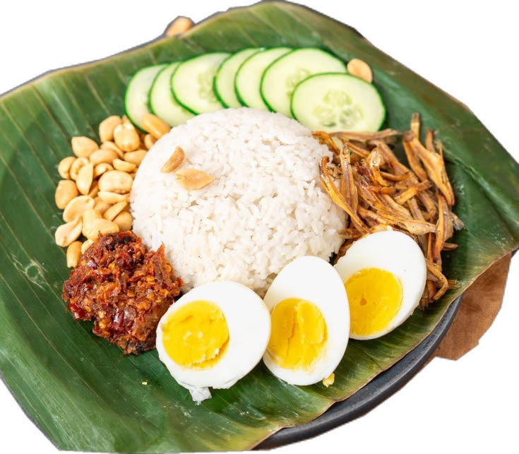

Nasi Lemak
Price: RM 8.50
Description: Fragrant coconut rice served with spicy sambal, fried anchovies, roasted peanuts, cucumber and a boiled egg.

The true taste of Malaysia, delivered to your door.
Thank you for visiting Selera Malaysia. We bring you the best of Malaysian food and drinks, from fragrant Nasi Lemak to frothy Teh Tarik, cooked fresh with authentic local flavours. Browse our featured menu below and place your order in just a few clicks.
Have a question or need help with your order? Send us a message using the form below.